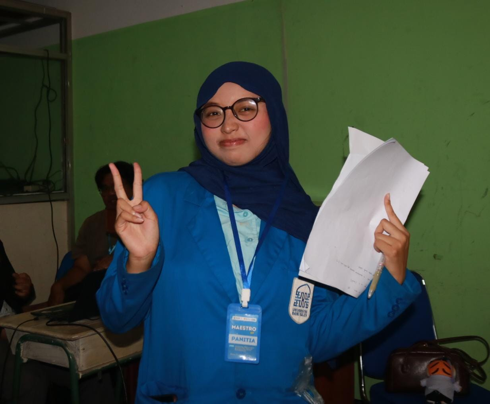

D3 Teknik Komputer - Universitas Bani Saleh
2024 - Sekarang (Aktif)
Bekasi, Jawa Barat. Menjabat sebagai Sekretaris Dewan Perwakilan Mahasiswa (DPM) dan Asisten Laboratorium Sistem Operasi.

Bekasi, Jawa Barat, Indonesia
alvita.kalila@email.com | 0812-XXXX-XXXX | LinkedIn: /in/alvitakalila
Mahasiswi D3 Teknik Komputer dengan minat mendalam pada pengembangan sistem embedded (IoT) dan rekayasa web. Memiliki pengalaman praktis dalam mengintegrasikan perangkat keras mikrokontroler dengan antarmuka web dan aplikasi mobile untuk menciptakan solusi teknologi yang efisien.
2024 - Sekarang (Aktif)
Bekasi, Jawa Barat. Menjabat sebagai Sekretaris Dewan Perwakilan Mahasiswa (DPM) dan Asisten Laboratorium Sistem Operasi.
Lulusan Keperawatan dengan dasar pemahaman kesehatan yang kuat, kini bertransisi secara profesional ke bidang Teknologi Informasi.
Sistem dispenser obat pintar dan manajemen Posbindu untuk lansia menggunakan ESP32, Smart Card RFID, dan sinkronisasi data online/offline.
Kartu Pintar Posyandu berbasis IoT dan RFID untuk digitalisasi rekam medis secara real-time. Lolos seleksi PKM-KC / PIMNAS 2026.
Sistem monitoring konsumsi daya listrik real-time berbasis IoT yang berhasil mendapatkan Hak Kekayaan Intelektual (HAKI) dan Juara Teknologi Tepat Guna Kota Bekasi.